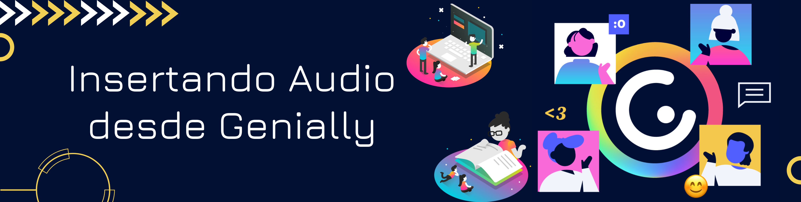
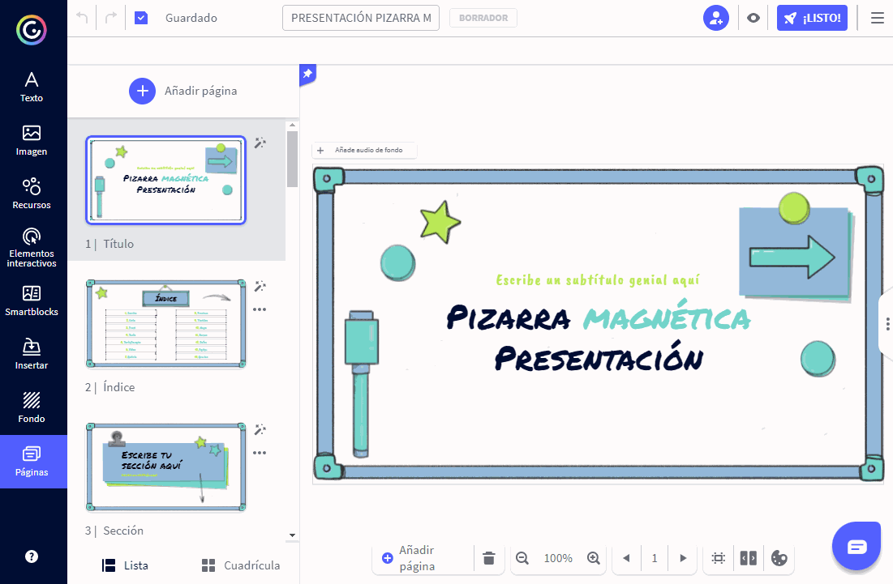

Insertando Elementos en Genially
Insertar Audio Grabado desde Genially
Contenido
1. En el Editor, haz clic en la sección Insertar que aparece en la barra lateral izquierda.
2. Se abrirá la pestaña Audio mostrando las distintas opciones para insertar audio en Genially. En este caso, ve al apartado Grabación de audio.
3. Para empezar a grabar, tienes dos opciones: haz clic en el botón del micrófono o bien sobre el mensaje Pulsa para grabar un audio. Importante: Aparecerá una ventana para que concedas permiso a Genially para acceder a tu micrófono. Ten en cuenta que si no permites el acceso, no podrás realizar la grabación.
4. Haz clic sobre el botón detener o sobre el mensaje Pulsa para finalizar la grabación cuando hayas terminado de grabar. Automáticamente aparecerá una representación de tu audio en el lienzo y se abrirá el menú de ajustes en la parte derecha de la pantalla.

NOTA: El tiempo máximo de grabación de audio es de 10 minutos.
¿Qué puedo editar en un archivo de audio de Genially?
Nombre del archivo
Se asignará un nombre por defecto al archivo, algo tipo audio_(número). Puedes cambiar el nombre del archivo a uno más descriptivo.
Reemplazar
Reemplaza tu audio por cualquier otro.
Autoplay
El audio se reproducirá de forma automática durante la visualización de tu genially. Esta opción no se puede desactivar en los audios de fondo.
Loop
Si está activada, tu audio se reproducirá en bucle hasta el infinito y más allá, sólo dejará de sonar cuando se abandone la visualización del genially.
Ocultar reproductor
El reproductor permanece oculto durante la visualización de tu Genially. Esta opción no se puede desactivar en los audios de fondo.
Audio de fondo
Al activar esta opción, se activan a su vez todas las opciones anteriores. Si desactivas esta opción, el audio se ubica dentro del lienzo y ya no será el audio de fondo de tu creación.
Acortar la duración
Puedes recortar tu audio especificando el momento exacto en el que quieres que comience y termine. Aquí puedes saber más sobre esto.
Obra publicada con Licencia Creative Commons Reconocimiento Compartir igual 4.0